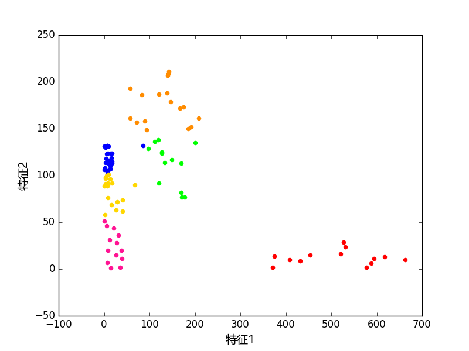
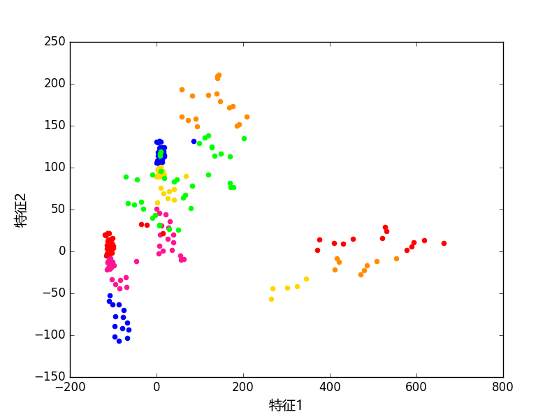

|
原始数据聚类结果
| 描述 |
聚类任务描述 |
| 样本数 |
100 |
| 聚类特征 |
特征1特征2 |
| 聚类权重 |
特征1 1特征2 1 |
| 聚类数 |
6 |
聚类质心
| 序号 | 特征1
| 特征2
| 代表样本
| 样本分布
|
|---|
| 1 | 512.2 | 12.4 |
样本88
样本89
|
(共13个样本
占比13.0 %)
|
|---|
| 2 | 144.3 | 112.2 |
样本35
样本50
|
(共13个样本
占比13.0 %)
|
|---|
| 3 | 12.1 | 118.5 |
样本86
样本84
|
(共24个样本
占比24.0 %)
|
|---|
| 4 | 20.5 | 24.0 |
样本1
样本2
|
(共13个样本
占比13.0 %)
|
|---|
| 5 | 129.9 | 176.1 |
样本45
样本23
|
(共17个样本
占比17.0 %)
|
|---|
| 6 | 15.8 | 84.8 |
样本7
样本13
|
(共20个样本
占比20.0 %)
|
|---|

| 备注 | 标记4 标记5 标记3 标记1 标记2 |
|---|
| 序号 | 包含的样本 |
|---|
1
(共13个样本
占比13.0 %) | 样本100,样本99,样本98,样本97,样本96,
样本95,样本94,样本93,样本92,样本91,
样本90,样本89,样本88, | 2
(共13个样本
占比13.0 %) | 样本48,样本33,样本31,样本30,样本26,
样本25,样本21,样本22,样本37,样本42,
样本47,样本50,样本35, | 3
(共24个样本
占比24.0 %) | 样本87,样本82,样本67,样本77,样本73,
样本69,样本68,样本67,样本66,样本59,
样本63,样本62,样本59,样本58,样本57,
样本64,样本75,样本70,样本44,样本76,
样本74,样本56,样本84,样本86, | 4
(共13个样本
占比13.0 %) | 样本20,样本19,样本18,样本17,样本14,
样本12,样本11,样本10,样本6,样本5,
样本3,样本2,样本1, | 5
(共17个样本
占比17.0 %) | 样本52,样本49,样本46,样本43,样本41,
样本40,样本39,样本38,样本36,样本34,
样本32,样本29,样本28,样本27,样本24,
样本23,样本45, | 6
(共20个样本
占比20.0 %) | 样本85,样本80,样本79,样本78,样本72,
样本71,样本61,样本54,样本53,样本8,
样本15,样本51,样本55,样本60,样本83,
样本4,样本16,样本9,样本13,样本7,
|
|
主成分聚类结果
| 描述 |
聚类任务描述 |
| 样本数 |
100 |
| 聚类特征 |
特征1特征2 |
| 聚类数 |
6 |
| 主成分数 |
2 |
聚类质心
| 序号 | 特征1
| 特征2
| 代表样本
| 样本分布
|
|---|
| 1 | 20.1 | 118.7 |
样本35
样本44
|
(共26个样本
占比26.0 %)
|
|---|
| 2 | 133.9 | 161.7 |
样本22
样本23
|
(共24个样本
占比24.0 %)
|
|---|
| 3 | 19.1 | 26.4 |
样本7
样本1
|
(共14个样本
占比14.0 %)
|
|---|
| 4 | 41.5 | 85.5 |
样本85
样本26
|
(共23个样本
占比23.0 %)
|
|---|
| 5 | 577.4 | 13.9 |
样本97
样本98
|
(共8个样本
占比8.0 %)
|
|---|
| 6 | 408.0 | 10.0 |
样本90
样本91
|
(共5个样本
占比5.0 %)
|
|---|

| 备注 | 标记4 标记5 标记3 标记1 标记2 |
|---|
| 序号 | 包含的样本 |
|---|
1
(共26个样本
占比26.0 %) | 样本87,样本86,样本84,样本82,样本67,
样本77,样本76,样本75,样本74,样本73,
样本70,样本69,样本68,样本67,样本66,
样本59,样本64,样本63,样本62,样本59,
样本58,样本57,样本56,样本21,样本44,
样本35, | 2
(共24个样本
占比24.0 %) | 样本52,样本50,样本49,样本48,样本47,
样本46,样本45,样本43,样本42,样本41,
样本40,样本39,样本38,样本37,样本36,
样本34,样本33,样本32,样本29,样本28,
样本27,样本24,样本23,样本22, | 3
(共14个样本
占比14.0 %) | 样本20,样本19,样本18,样本17,样本14,
样本12,样本11,样本10,样本6,样本5,
样本3,样本2,样本1,样本7, | 4
(共23个样本
占比23.0 %) | 样本83,样本80,样本78,样本72,样本71,
样本61,样本60,样本55,样本54,样本53,
样本51,样本16,样本15,样本13,样本9,
样本8,样本4,样本25,样本30,样本31,
样本79,样本26,样本85, | 5
(共8个样本
占比8.0 %) | 样本100,样本93,样本92,样本89,样本88,
样本96,样本98,样本97, | 6
(共5个样本
占比5.0 %) | 样本99,样本95,样本94,样本91,样本90,
|
|